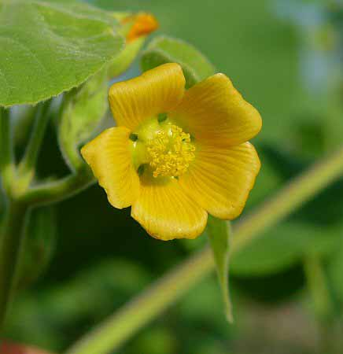

It grows to 1 m tall, and has velvet-like heart-shaped leaves 15–25 cm broad. The flowers are yellow or orange, 4 cm diameter, maturing into button-shaped capsules which split lengthwise to release the seeds. The flowers and plants have a fruity scent. Velvetleaf grows as a weed primarily in cropland, especially corn fields, and it can also be found on roadsides and in gardens. Velvetleaf prefers rich and cultivated soils, such as those used in agriculture.